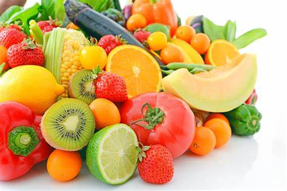
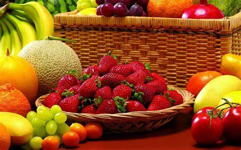
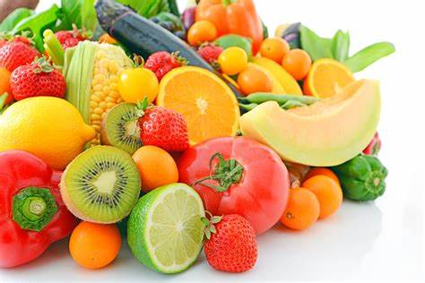
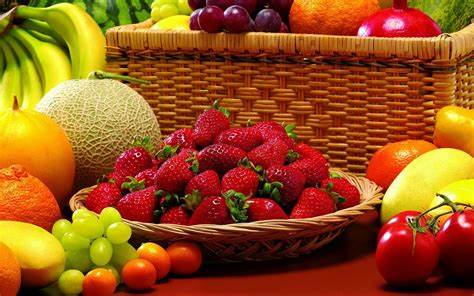

Bienvenido a nuestra página sobre alimentos saludables. Aquí encontrarás información sobre los diferentes tipos de alimentos que debes incluir en tu dieta para mantener una buena salud. Desde frutas y verduras hasta cereales, proteínas y grasas, todo lo que necesitas saber está aquí.
Navega por nuestras secciones para conocer más sobre cada tipo de alimento y aprende cómo incluirlos en tu dieta. También encontrarás recetas saludables y consejos para llevar una alimentación equilibrada.
 



"Bienvenidos a nuestra empresa de alimentos saludables. En nuestra empresa, creemos que la alimentación es la base de la salud y el bienestar, y estamos comprometidos a ofrecer productos nutritivos y saludables a nuestros clientes. Ofrecemos una amplia variedad de alimentos saludables, desde frutas y verduras frescas hasta granos integrales, proteínas magras y productos sin gluten. Todos nuestros productos son cuidadosamente seleccionados y procesados para asegurar su frescura y calidad nutricional.
Además, trabajamos con agricultores locales y proveedores de confianza para asegurarnos de que nuestros productos sean cultivados de forma responsable y sostenible. Nos enorgullece ofrecer opciones de alimentación saludable para personas con diferentes necesidades dietéticas, como veganos, vegetarianos, sin gluten y bajos en carbohidratos. Nos enorgullece ofrecer opciones de alimentación saludable para personas con diferentes necesidades dietéticas, como veganos, vegetarianos, sin gluten y bajos en carbohidratos. En nuestra empresa, valoramos la importancia de la salud y el bienestar de nuestros clientes y estamos comprometidos a ofrecer productos de alta calidad. ¡Le invitamos a probar nuestros alimentos saludables y experimentar la diferencia en sabor y frescura!